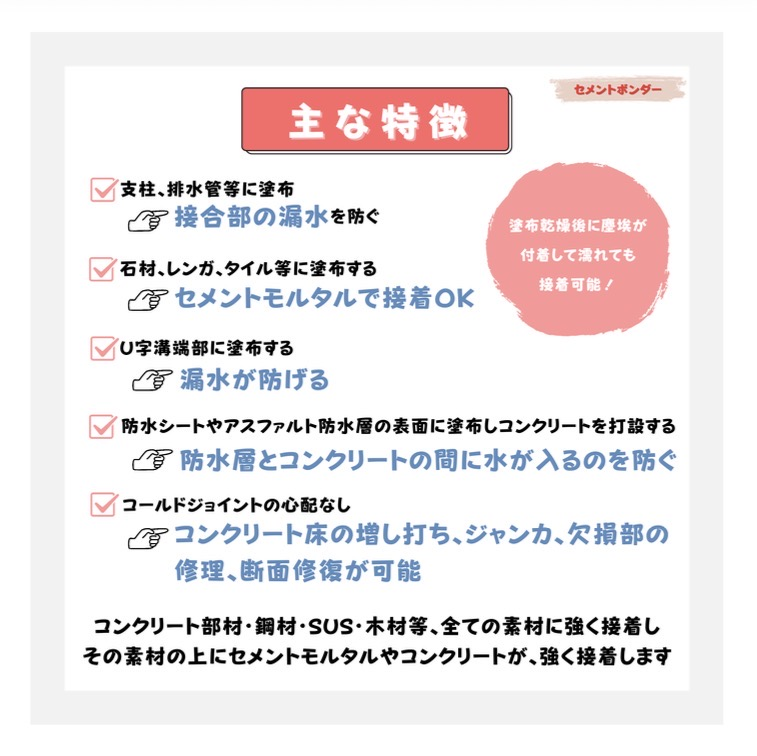
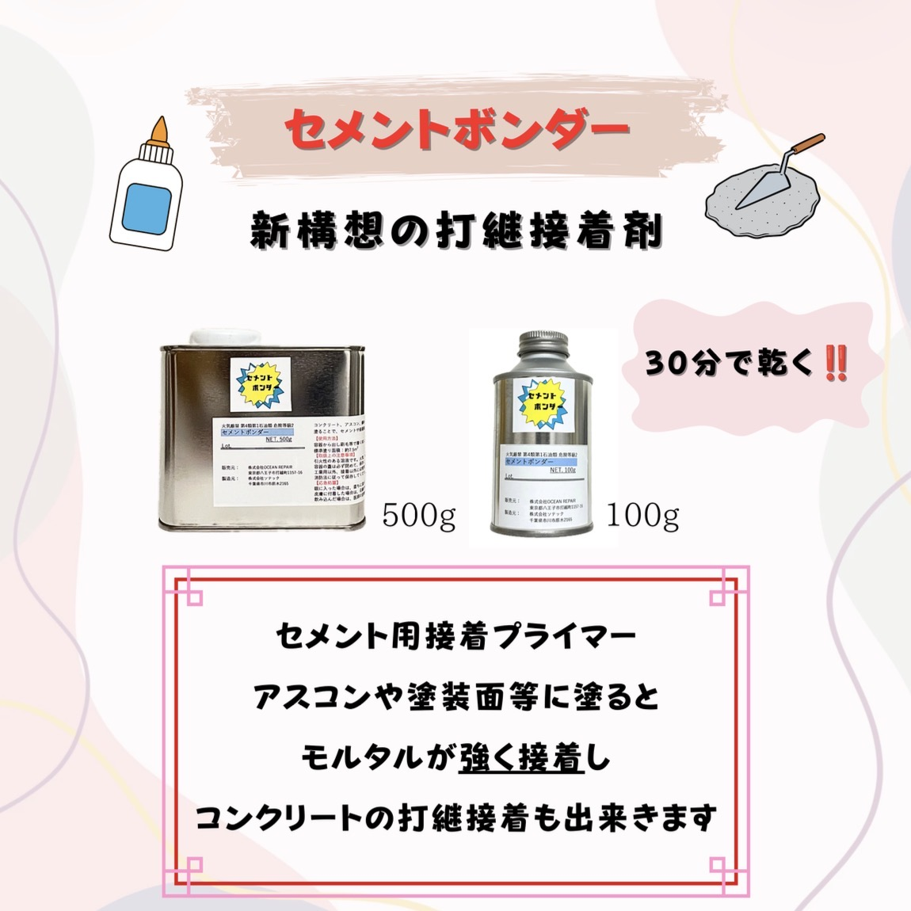
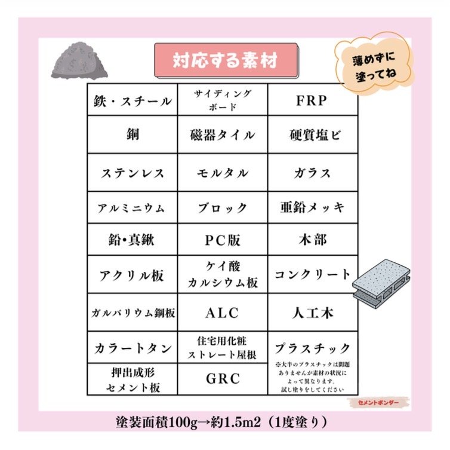
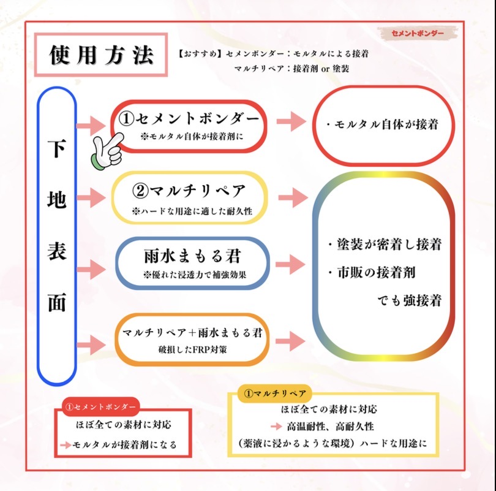

セメントボンダー
新構想の打継接着剤。セメントモルタルを「接着剤」として活用するための セメント用接着プライマーです。
施工イメージ




商品説明
セメントモルタルは、適切なプライマーを使用することで接着剤として機能します。 「セメントボンダー」はそのセメント用接着プライマーです。
コンクリート・アスコン・鋼材・亜鉛メッキ鋼材・ステンレス・塗装面などに 塗布しておくことで、セメントが強く接着します。
つまり、コンクリートの打継接着を実現することが可能になります。
主な用途
- セメントに埋め込まれる支柱や排水管に塗布すると接合部の漏水を防止
- 石材・レンガ・タイルに塗布すればセメントモルタルで強力接着
- 露天風呂・水槽・水路など水漏れしない構造の施工が可能
- U字溝端部の接続部の漏水防止
- 防水シートやアスファルト防水層の上に押さえコンクリート施工が可能
- コンクリート床の増し打ち、ジャンカ補修、断面修復
- 石膏ボード壁を聚楽壁など和風仕上げにする接着プライマーとして使用可能
接着可能素材
コンクリート・鋼材・ステンレス・銅・真鍮・亜鉛・アルミ・石材・タイル・木材など、 ほとんど全ての素材に強く接着し、その上にセメントモルタルやコンクリートが 強力に密着します。
塗布乾燥後に多少の塵埃が付着しても、濡れても接着性能を維持します。
※化学的に安定で無害な熱可塑ゴム系接着剤を溶剤に溶かした塗料です。
販売情報
販売元：株式会社 OCEAN REPAIR
東京都八王子市打越町1157-16
E-mail：oceanrepair2024@gmail.com
TEL：090-9645-5816
製造元：株式会社ソテック
千葉県市川市原木2165
TEL：047-328-6390